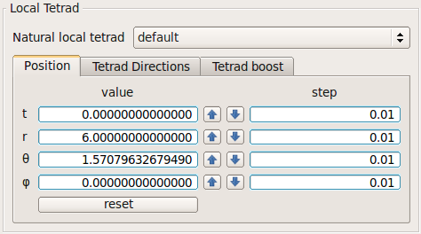
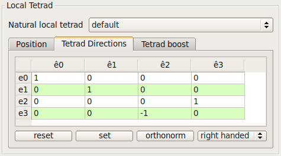
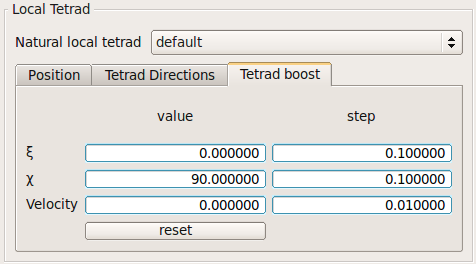

Local tetrad
The initial position of the geodesic is given in the specific coordinates of the metric.

Each metric must have at least one natural local tetrad (ê0,ê1,ê2,ê3). The local reference frame
for the geodesic (e0,e1,e2,e3) is defined with respect to one of the natural local tetrads. Enter the coefficients and press 'set'. If you will be sure that the tetrad is orthonormal press 'orthonorm'. Some predefined tetrads can be selected using the right most combo box.

The local reference frame defined in Tetrad Directions can be boosted in an arbitrary direction with
a velocity which is less than the speed of light.
